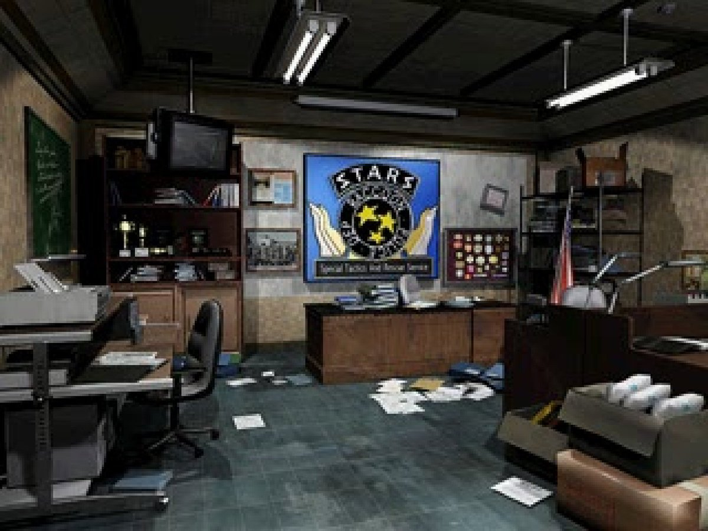
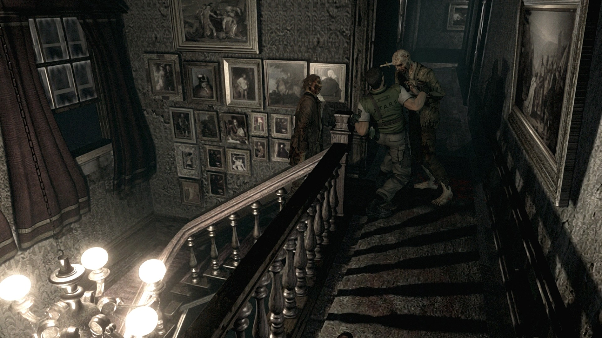
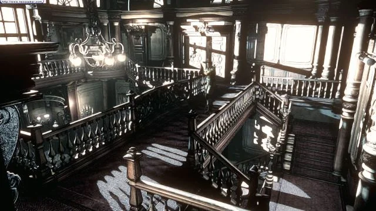
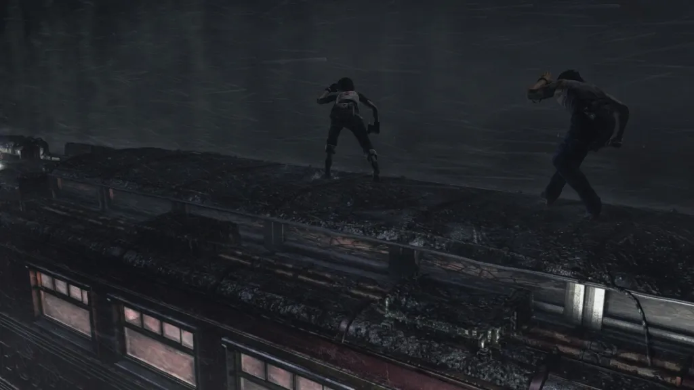

The drawings I made were very much inspired by the old school Resident Evil games in which those games had a still camera so the developers had to get creative with making uncomfortable and haunting angles.



